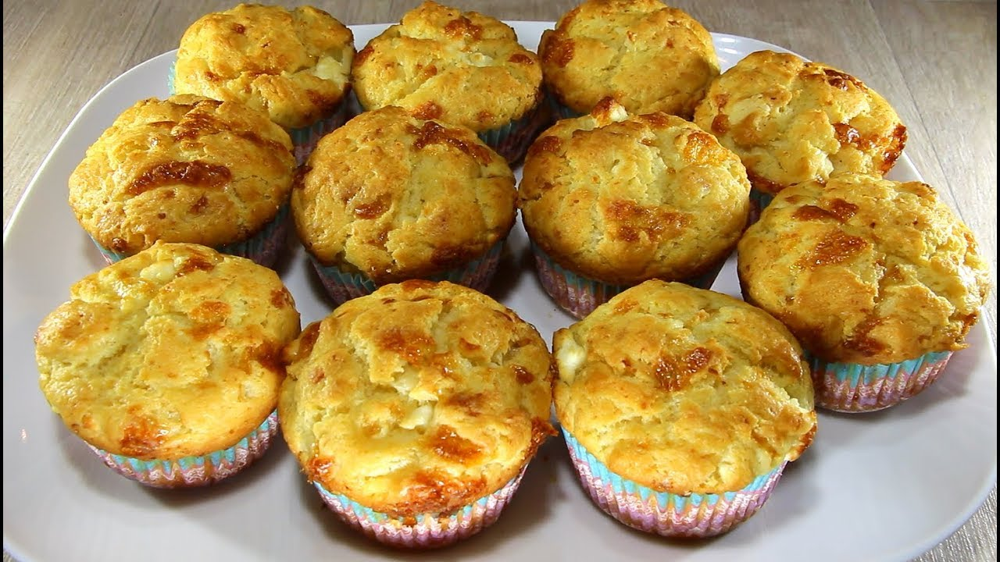

Hey there! I’m Trayan — 30 years old, curious by nature, and always
chasing
the next thing that sparks my interest. This blog is my little corner of the internet where I
share
the
things I’m passionate about — from hobbies I’m diving into, to thoughts, ideas, and everything
in
between.
Whether it’s exploring new tech, diving into creative projects, or just enjoying the simple
things
in
life, this space is all about what excites and inspires me. Thanks for stopping by — hope you
find
something here that clicks with you too.
üåÑ The Outdoors: Where I Feel Most Alive
There’s something about being out in nature that resets everything — the
mind, the body, the soul. For me, the outdoors isn't just a hobby, it's a way of reconnecting
with
what
really matters. Whether I’m hiking through quiet forest trails or trekking across rugged
terrainthat’s
when I feel the most at peace.
This section of the blog is all about those experiences. I’ll be sharing trail stories, mountain
adventures, gear I’ve used, lessons learned (sometimes the hard way), and the raw beauty that
makes
every challenge worth it. If you’re into hiking, trekking — or just curious about
stepping into the wild — you’re in the right place.
Let’s expore the outside!
üíª Code & Creativity: Building for an Easier Tomorow
When I’m not out exploring nature, I’m probably deep in code — turning ideas
into digital tools that make life a little easier. Programming has always been more than just
logic
and
syntax for me — it’s a creative outlet, a problem-solving mindset, and honestly, kind of
addictive
in
the best way.
I’m especially into web development and mobile apps — creating things that are not only
functional
but
actually help in day-to-day life. Whether it’s a small script that saves time, a full-blown app,
or
just
a random experiment that turns into something useful, this space is where I share that side of
my
world.
If you’re into tech, building cool stuff, or just like seeing how code can improve the little
things
in
life — this is the spot.
Let's dive into the
matrix->
üç∞ Sweet Side of Life: Baking, Pastry & Dessert
When the hiking boots are off and the code editor is closed, you’ll probably
find me in the kitchen, covered in flour and chasing that perfect bake. Cooking is my way of
slowing
down — and baking, in particular, is where I really get into the zone. There's something
incredibly
satisfying about turning simple ingredients into something that brings comfort, joy, or just a
really
good sugar rush.
This part of the blog is dedicated to all things sweet — from flaky pastries and homemade
desserts
to
the occasional savory experiment. I’ll be sharing recipes, tips I’ve picked up, successes (and
probably
a few fails), and everything in between.
If you love the smell of fresh bread, the magic of a well-balanced dessert, or just enjoy the
art of
baking, welcome to my kitchen.
Let’s cook something
delicious!
üåÑ The Outdoors: Where I Feel Most Alive
There’s something about being out in nature that resets everything — the
mind, the body, the soul. For me, the outdoors isn't just a hobby, it's a way of reconnecting
with
what
really matters. Whether I’m hiking through quiet forest trails or trekking across rugged
terrainthat’s
when I feel the most at peace.
This section of the blog is all about those experiences. I’ll be sharing trail stories, mountain
adventures, gear I’ve used, lessons learned (sometimes the hard way), and the raw beauty that
makes
every challenge worth it. If you’re into hiking, trekking — or just curious about
stepping into the wild — you’re in the right place.
Hiking the Seven Rila Lakes: A Journey Through Bulgaria’s
Alpine Beauty
There are hikes that you remember, and then there are hikes that stay with you — the
kind
that get under your skin and call you back even before you’ve left. The Seven Rila Lakes
trail in Bulgaria is definitely one of those. If you love mountain views, crystal-clear
lakes, and fresh alpine air, this hike is a must.
Where Are the Seven Rila Lakes?
Tucked high up in the Rila Mountains, the Seven Rila Lakes are part of the Rila National
Park — one of the most stunning natural spots in Bulgaria. They sit between 2,100 and
2,500
meters above sea level and are glacial in origin, each with its own name and
personality,
shaped by its look or the legends tied to it.
Here are the seven, from lowest to highest:
Dolnoto Ezero (The Lower Lake)
Ribnoto Ezero (The Fish Lake)
Trilistnika (The Trefoil)
Bliznaka (The Twin)
Babreka (The Kidney) — arguably the most iconic one.
Okoto (The Eye) — the deepest glacial lake in Bulgaria.
Salzata (The Tear) — the highest, and often the most peaceful.
Read More...
Babreka (The Kidney) — arguably
the most iconic one.
The Hike Itself
The journey usually starts from the lift at
Panichishte, which takes you up to the Rila Lakes Hut. From there, the trail climbs
gradually, passing each lake one by one. You can do the hike as a loop, and there
are
several options depending on your pace and the views you’re after.
I recommend starting early — not just to beat
the
crowds, but because watching the morning sun hit the lakes is something else. The
colors
shift with the light, the reflection of the peaks on the still water is unreal, and
every
step upward rewards you with an even more breathtaking view.
What Makes It Special?
For me, it’s not just the landscape — although
that’s
clearly a huge part. It’s the feeling you get being there. The calm. The space. The
reminder
of how small we are in the best possible way.
There's also something deeply spiritual about
the
place. It’s sacred to the White Brotherhood, a spiritual movement that gathers there
every
August for rituals, music, and dancing. Even if you're not part of that tradition,
the
energy up there feels special.
Tips for the Trail:
Wear proper hiking boots — some parts of the trail are rocky and uneven.
Bring layers — even in summer, the weather can shift quickly.
Pack water and snacks — there are a few huts, but always good to be prepared.
Take your time — it’s not about rushing to the top, it’s about soaking it all
in.
Final Thoughts
The Seven Rila Lakes aren’t just a hike —
they’re
an
experience. Whether you go for the adventure, the scenery, or just to unplug for a
while,
this place delivers. It’s one of those trails that reminds you why you fell in love
with
the
outdoors in the first place.
And trust me — once you've stood by Salzata and
looked
out over the whole valley, you'll understand why people return again and again.
Okoto (The Eye) — the deepest
glacial lake in Bulgaria.
Breathtaking view from Lake peak.
Exploring Kamen Del: Sofia’s Hidden Gem Above the Clouds
If you're looking for a quick yet breathtaking escape from the hustle of Sofia, Kamen
Del Peak should be at the top of your list—literally and figuratively. Tucked into the
northern slopes of Vitosha Mountain, this rocky summit offers some of the most stunning
panoramic views over the Bulgarian capital. Whether you're a local looking to rediscover
your backyard or a traveler craving a nature fix without straying far from the city,
Kamen Del delivers.
Why Kamen Del?
Kamen Del (meaning “Stone Piece” in Bulgarian) might not be the highest peak on Vitosha
(that title goes to Cherni Vrah), but it’s arguably one of the most rewarding hikes for
minimal effort. Standing at 1,862 meters, the peak reveals a jaw-dropping view of Sofia,
especially during golden hour. And best of all? It’s accessible year-round and doesn’t
require any hardcore mountaineering.
The Hike: Trail Options
Read More...
You can see the whole of Sofia
and appreciate the peace and quiet.
There are several routes to Kamen Del, depending on how much time you have and your
desired level of challenge:
Aleko Hut Route
Start: Aleko Hut (accessible by car or lift from Simeonovo)
Duration: ~1.5 hours (one way)
Difficulty: Easy to moderate
This is a great all-season route, especially scenic in late autumn or after
a fresh snow.
Boyana Church Route
Start: Boyana neighborhood
Duration: 3–4 hours (round trip)
Difficulty: Moderate
Ideal for those wanting a longer hike with a cultural bonus. Start your day
at the UNESCO-listed Boyana Church, then work your way up through lush
forest paths toward the peak.
Dragalevtsi Lift Option
Start: Dragalevtsi lift station (take the lift to Goli Vrah, then hike
across)
Duration: ~2 hours total
Difficulty: Easy
A great choice if you want to save time or enjoy a more relaxed hike.
What to Expect at the Top
The summit is marked by a large rocky plateau, with
jagged boulders that give the peak its name. Bring a snack, a warm layer, and a
camera—the views stretch out over Sofia, the Balkan Mountains to the north, and even the
distant ridges of Rila on a clear day. It’s also a great spot for drone shots or a
peaceful moment away from it all.
I recommend starting early — not just to beat
the
crowds, but because watching the morning sun hit the lakes is something else. The
colors
shift with the light, the reflection of the peaks on the still water is unreal, and
every
step upward rewards you with an even more breathtaking view.
Local Tips
Best time to go: Late spring through early autumn offers the best
weather and clearest views. That said, winter snowshoe hikes up here are magical
too.
Watch the wind: Kamen Del is quite exposed, so bring a
windbreaker—even in summer.
Sunset chasers: This is one of the best spots on Vitosha to watch
the sun set over Sofia. Just remember to bring a headlamp for the hike down.
Wildlife: Keep your eyes open for hawks and the occasional mountain
goat in quieter months.
Final Thoughts
Kamen Del Peak is the kind of place that reminds
you how lucky Sofia is to be nestled at the foot of Vitosha. In just a couple of hours,
you can leave the city behind and find yourself on a peaceful summit with an unbeatable
view. Whether you're a seasoned hiker or just dipping your toes into the outdoor scene,
Kamen Del is a must-visit spot that belongs on every nature lover’s radar.
An amazing skyline.
Captivating sunset over Sofia.
üíª Coding Corner: for an Easier Life
When I’m not out exploring nature, I’m probably deep in code — turning ideas
into digital tools that make life a little easier. Programming has always been more than just
logic
and
syntax for me — it’s a creative outlet, a problem-solving mindset, and honestly, kind of
addictive
in
the best way.
I’m especially into web development and mobile apps — creating things that are not only
functional
but
actually help in day-to-day life. Whether it’s a small script that saves time, a full-blown app,
or
just
a random experiment that turns into something useful, this space is where I share that side of
my
world.
Take your pick
How AI is Changing the Landscape of Software Development
The world of software development is undergoing a transformation — and artificial
intelligence
(AI) is at the heart of it. What once required hours of manual labor can now be assisted,
accelerated, or even automated by AI-powered tools. But what does this actually mean for
developers on the ground? Let's take a closer look.
Smarter Code Suggestions
AI-powered code completion tools like GitHub Copilot, Amazon CodeWhisperer, and Tabnine are
revolutionizing the way we write code. By analyzing massive codebases and learning from
them,
these tools can now suggest entire lines or blocks of code as you type — not just individual
syntax snippets.Developers report a boost in productivity and a significant reduction in
boilerplate code. While these tools aren’t perfect, they help bridge knowledge gaps and can
offer solutions that a human might overlook.
Automated Testing and QA
Testing is a critical part of development, and AI is making this process smarter and faster.
Tools like Diffblue Cover and Testim can automatically generate unit tests or perform
end-to-end
testing using machine learning to simulate real-world user behavior.
AI-enhanced QA means fewer bugs slipping into production, and less manual effort spent
writing
exhaustive test cases.
Intelligent Debugging
Debugging has long been a time-consuming chore. But with AI’s ability to analyze logs,
monitor
application performance, and learn patterns of failure, we're now seeing tools that
proactively
detect and even suggest fixes for bugs. Microsoft’s IntelliCode and startup solutions like
Rookout are early examples.
A Future of Human-AI Collaboration
Rather than replacing developers, AI is becoming a coding companion. The future will likely
see
AI and human developers working side-by-side — the human guiding creativity and logic, and
the
AI speeding up repetitive or complex tasks.
The key will be learning how to harness these tools wisely, understanding their limitations,
and
continuing to develop a deep understanding of software architecture and problem-solving.
Technology and Its True Purpose: Making Life Easier
In a world buzzing with innovation, it's easy to get caught up in the latest gadgets, apps,
and
algorithms. But if we strip it all down to its core, the true purpose of technology has
always
been simple: to make life easier.
What Do We Really Mean by "Easier"?
“Easier” doesn’t just mean faster or more convenient — though those are key benefits. It
means
reducing human effort, solving complex problems, connecting people across distances, and
enhancing our ability to live, work, and thrive. From the wheel to the smartphone, every
major
invention has aimed to improve the human experience.
Everyday Tech That Transformed Our Lives
Smartphones have become an extension of ourselves — calendars, cameras, GPS devices,
entertainment centers, and communication tools all rolled into one.
Voice assistants like Alexa, Siri, and Google Assistant help us multitask and get things
done hands-free.
Online banking and digital payments have eliminated the need for long queues and paper
checks.
Wearable tech like smartwatches and fitness trackers help us monitor our health in real
time.
These aren’t just luxuries anymore. For many, they’re essential tools that simplify daily
routines.
Technology as a Global Equalizer
While it’s not perfect, technology has the power to level the playing field:
Remote work and learning allow people to access jobs and education from anywhere.
Telemedicine brings healthcare to rural and underserved areas.
Translation apps break language barriers and open up global communication.
These tools empower individuals regardless of geography, background, or income — pushing us
toward a
more connected and inclusive world.
The Rise of Automation and AI
One of the most exciting frontiers in tech is automation. AI-driven systems are now handling
everything from sorting emails to diagnosing medical conditions. While some fear job
displacement, automation can also free us from repetitive, time-consuming tasks — giving
people
more time to focus on creative, meaningful, and impactful work.
But Here’s the Catch: Purpose-Driven Tech
As we continue to innovate, it’s important to ask: Is this technology truly serving us? Not
all
tech makes life easier. Some can complicate it — through distractions, privacy risks, or
dependency. That’s why human-centered design and ethical innovation are so important.
Technology
should work with us, not against us.
In Conclusion
Technology, at its best, is a tool for good — a bridge between problems and solutions.
Whether
it’s saving us time, expanding our access to knowledge, or connecting us with loved ones
around
the globe, its purpose remains clear: to make life easier, better, and more fulfilling.
The future isn’t just about smarter tech — it’s about using that tech smartly.
Lifestyle Apps: Easing the Mental Load in the Age of Endless Decisions
Life in the 21st century is nothing if not full. From the moment we wake up, we’re bombarded
with choices — what to eat, what to wear, what to work on, what to post, who to reply to,
which tab to close, what to buy, and when to unplug (if ever).
It’s no exaggeration to say we make hundreds, if not thousands of decisions every day — far
more than our ancestors ever did. And while progress has brought us convenience, it’s also
come with a price: decision fatigue and mental overload.
That’s where lifestyle apps come in — quiet heroes in our chaotic lives, subtly reducing the
cognitive clutter so we can focus on what matters.
Decision Fatigue: The Hidden Drain on Our Mental Energy
Studies show that the human brain has a limited capacity for quality decision-making in a
day. The more choices we face — even small ones — the more our focus, willpower, and
emotional bandwidth get depleted. That’s why people like Steve Jobs wore the same outfit
every day — one less decision to make.
Now, multiply that mental load by modern life:
Dozens of open browser tabs.
Constant app notifications.
Multiple group chats.
Calendar alerts.
Streaming choices.
Even choosing lunch can feel overwhelming.
How Lifestyle Apps Lighten the Load
How Lifestyle Apps Lighten the Load
Lifestyle apps, when used intentionally, act like digital assistants — not replacing our
choices, but streamlining them.
Smart Calendars & Task Managers
Apps like Google Calendar, Todoist, and Notion help us externalize memory — so we don’t have
to mentally juggle appointments, meetings, and goals.
Meal Planners & Grocery Lists
Tools like Mealime or Yummly take the stress out of daily food decisions. You pick your
goals, and the app handles the rest.
Wellness & Mindfulness Apps
Headspace, Calm, and Balance don’t just help you relax — they remind you to take a break,
breathe, and reflect, acting as your personal mental health allies.
Wardrobe & Style Helpers
Virtual closet apps like Stylebook help you plan outfits in advance, reduce clothing
clutter, and avoid the dreaded “what should I wear?” moment each morning.
Budgeting & Finance Tools
Apps like YNAB or Mint don’t just track your spending — they automate the boring parts of
money management, freeing up energy for bigger financial decisions.
Tech for Balance, Not Dependence
Here’s the key: Lifestyle apps are here to assist, not control.
When used wisely, they act like cognitive offloading tools — freeing up your brain so you
can make fewer, but better, decisions.
But like any tool, balance matters. Relying too heavily on tech can sometimes dull our
natural intuition or make us feel more scattered. The goal isn’t to outsource our entire
lives — it’s to use tech to create space for reflection, creativity, and presence.
Final Thought
In a world where we’re asked to think, choose, and react faster than ever before, lifestyle
apps are more than just digital conveniences. They’re modern coping tools — helping us
manage the invisible weight of decision overload.
We don’t need to live like machines.
We just need smarter tools to help us live like humans — with more peace, clarity, and
intention.
üç∞ Sweet Side of Life: Baking & Dessert
When the hiking boots are off and the code editor is closed, you’ll probably
find me in the kitchen, covered in flour and chasing that perfect bake. Cooking is my way of
slowing
down — and baking, in particular, is where I really get into the zone. There's something
incredibly
satisfying about turning simple ingredients into something that brings comfort, joy, or just a
really
good sugar rush.
This part of the blog is dedicated to all things sweet — from flaky pastries and homemade
desserts
to
the occasional savory experiment. I’ll be sharing recipes, tips I’ve picked up, successes (and
probably
a few fails), and everything in between.
If you love the smell of fresh bread, the magic of a well-balanced dessert, or just enjoy the
art of
baking, welcome to my kitchen.
Sweet cocoa cake with bananas
30 minutes
Moist and juicy soft cake. Two different flavors – warm and cold.
Ingredients:
2 eggs, 2 bananas, 1 cup sugar, 1 cup water, 1/2 cup oil, 2 1/2 cups flour, 1 packet
vanilla (about 1 tsp or 1 sachet), 1 packet baking powder (usually 10–12 g / about 2
tsp)
Preparation:
In a bowl, mix the flour with the baking powder and vanilla. In a separate bowl, beat the rest
of the
ingredients in the order they are listed, except for the bananas. Grease a cake tin with oil and
lightly dust it with flour. Pour 1/3 of the batter into the tin.Slice the bananas into rounds
and
place about half of them over the batter. Pour in another 1/3 of the batter, then add the
remaining
banana slices.Finish by pouring in the rest of the batter. Bake in a preheated oven at 180°C
(350°F)
on the middle rack, until a toothpick comes out clean (usually around 40–50 minutes, depending
on
your oven). Once baked, you can sprinkle with powdered sugar if desired.
Sweet Cocoa Cake with Blueberries
30 minutes
Perfect for all the blueberry lovers out there!
Ingredients:
2 eggs, 1 cup sugar, 1 cup water, 1/2 cup oil, 2 1/2 cups flour, 1 packet
vanilla (about 1 tsp or 1 sachet), 1 packet baking powder (usually 10–12 g / about 2
tsp), 125 g blueberries (fresh or frozen)
Preparation:
In a bowl, mix the flour with the baking powder and vanilla. In a separate bowl, beat the
remaining ingredients in the order they’re listed. Gently fold in the washed blueberries at the
end, being careful not to crush them. Pour the batter into a greased and floured cake tin. Bake
in a preheated oven at 180°C (350°F) on the middle rack until a toothpick inserted comes out
clean (around 40–50 minutes). Once baked, let it cool and optionally sprinkle with powdered
sugar. Serve cold for the best texture and flavor.
Pancakes
5 minutes
Fast, easy, delicious!
Ingredients:
Eggs, Flour, Oil, Water (about 200 ml per egg)
Preparation:
Beat one egg with 200 ml of water in a mixing bowl. Gradually add flour until the batter reaches
the right consistency. Tip: For me, it’s ready when the batter starts leaving visible trails
when stirred with a fork. Heat a non-stick pan and add one drop of oil before pouring in the
batter for each pancake. Cook each pancake for about 1 minute on the first side, then flip.
Total cooking time: about 2 minutes per pancake. One egg yields approximately 5 pancakes.
You can serve them sweet or savory!
Healthy Cocoa Cream
5 minutes
A fantastic dessert with no added sugars or sweeteners—just a touch of honey. Kids
absolutely love it!
Peel and clean the avocado and banana. Place all ingredients in a bowl and blend until smooth
and creamy. Chill in the fridge before serving, if desired.
Perfect as a guilt-free treat, snack, or even a fun breakfast twist.
Banitsa with Cheese, Yogurt, and Eggs
65 minutes
Serve the banitsa with a glass of ayran and a big smile!
Ingredients:
500 g filo pastry (banitsa sheets), 300 g yogurt, 5 eggs, 400 g feta cheese (or
Bulgarian sirene cheese), 1 teaspoon baking soda, 150 g butter, Powdered sugar for
sprinkling
Preparation:
Beat the eggs in a bowl. In a separate bowl, dissolve the baking soda in the warm yogurt, then
add this mixture to the beaten eggs. Stir well. Crumble the feta cheese into large pieces. For
each sheet of filo pastry, brush lightly with melted butter, then spread a little of the egg and
yogurt mixture over the top. Sprinkle some of the crumbled cheese on the pastry. Roll up two
sheets of pastry into a spiral and place them in a greased baking dish, forming a circle. Repeat
until all the pastry is used. Pour the remaining egg and yogurt mixture over the top of the
banitsa. Dot the banitsa with a few small pieces of butter and bake in a preheated oven at 200°C
(390°F) for about 35-40 minutes. After baking, dust generously with powdered sugar and lightly
sprinkle with cold water. Cover the banitsa and let it sit for 15-20 minutes before serving.
A wonderfully comforting, savory-sweet dish that’s perfect for breakfast, brunch, or any time
you’re craving a taste of Bulgaria!

Lazy Savory Buns
30 minutes
A fantastic afternoon snack!
Ingredients:
1 cup yogurt, 1 teaspoon baking soda, 1/2 cup oil, 2 1/2 cups flour, 1 cup crumbled feta
cheese (or Bulgarian sirene cheese)
Preparation:
In a bowl, mix all the ingredients in the order they’re listed. With greased hands, form small
balls of dough and place them on a baking tray lined with parchment paper. Bake in a preheated
oven at 180°C (350°F) on the middle rack for about 15-20 minutes, or until golden brown and
cooked through.
These Lazy Savory Buns are soft, cheesy, and the perfect snack to enjoy with tea or coffee.
Sweet cocoa cake with bananas
Moist and juicy soft cake. Two different flavors – warm and cold.
Sweet Cocoa Cake with Blueberries
Perfect for all the blueberry lovers out there!
Pancakes
Fast, easy, delicious!
Healthy Cocoa Cream
A fantastic dessert with no added sugars or sweeteners—just a touch
of honey. Kids absolutely love it!
Banitsa with Cheese, Yogurt, and Eggs
Serve the banitsa with a glass of ayran and a big smile!